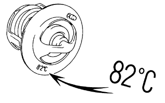
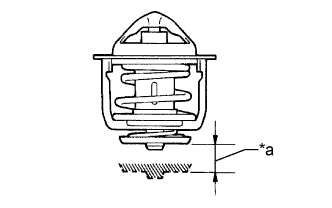

ТЕРМОСТАТ > ПРОВЕРКА |
| 1. INSPECT THERMOSTAT |
|  |
Immerse the thermostat in water, and then gradually heat the water.
Check the valve opening temperature of the thermostat.
|  |
Check the valve lift.
| *a | Valve Lift |
Check that the valve is fully closed when the thermostat temperature is below 77°C (171°F).
If the valve is not fully closed, replace the thermostat.